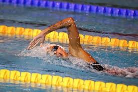
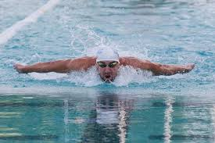
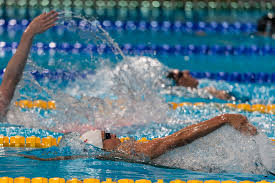
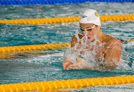
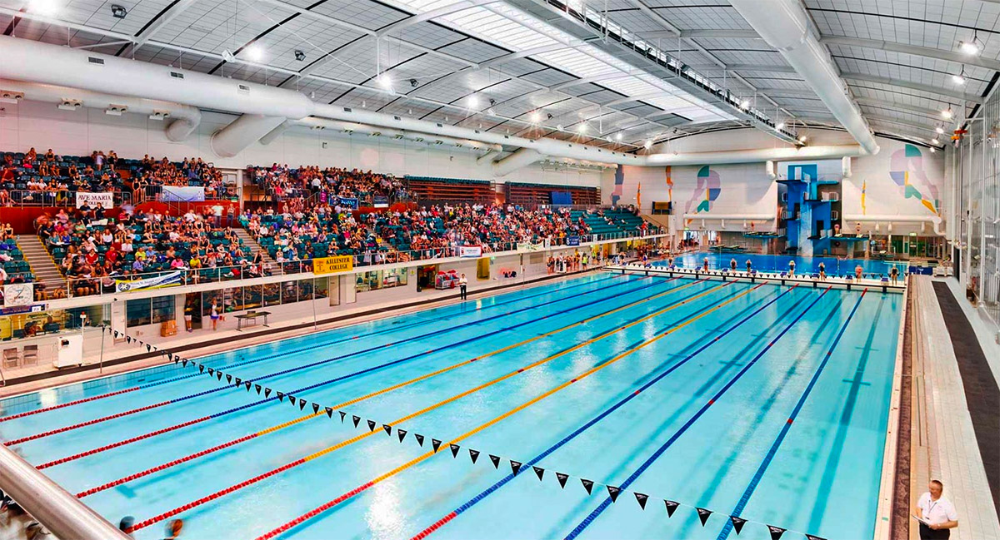
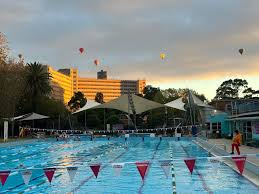
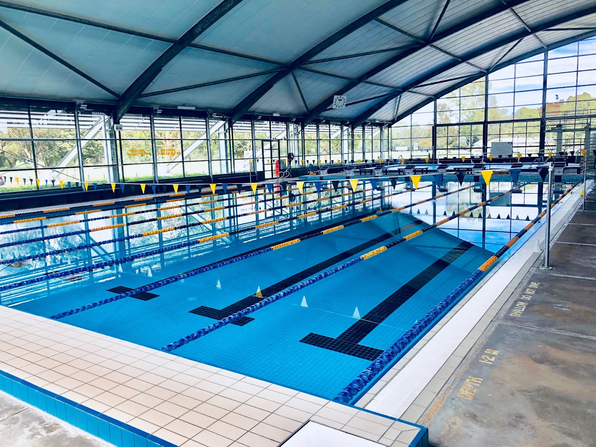

SWIMMING STROKES
Front Crawl

- Continuous flutter kicking to propel the body forward
- Alternating arm strokes reaching forward and pulling through the water
- Rotation of the body for efficient breathing
- Fastest and most efficient stroke in competitive swimming
Butterfly

- Simultaneous arm movements resembling a butterfly's wings
- Dolphin kick with both legs moving up and down together
- Requires upper body strength and coordination
- Notable for being the most energy inefficient stroke
Backstroke

- Alternating arm strokes while on the back
- Flutter kick with a relaxed and steady motion
- Allows for continuous breathing without turning the head
Breaststroke

- Uses frog-like kicking as the major driving force
- Arms extend outwards then pull back until palms reach the chest
- Requires focus on rhythm and tempo between arms and legs
- Graceful but commonly thought to be the slowest stroke
COMPETITIVE RULES
Starting
- Competitors must all start with both hands and feet on the blocks and must perform any dive of their preference to enter the water.
- Backstroke is exempted from this rule as competitors will start in the water.
- Competitors will be given only two signals for the race start:
- The referee shouting "Take your marks"
- A single long whistle from the referee
- If a competitor leaves the block any moment before this, it is known as a "False Start".
- A False Start can be called by either the starting judge or the referee but must be agreed on by both to be valid.
- Competitors must remember that the starting judge is at all times in charge of their positioning.
- In the case of a relay:
- Any swimmer starting after the first must wait for the preceeding competitor to touch the wall and complete their length before leaving the blocks.
- Similar ruling as before applies in terms of False Starting.
Finishing
- Competitors must touch the wall in the way specified by their stroke:
- Front Crawl: Atleast one hand must touch the wall.
- Backstroke: Atleast one hand must touch the wall.
- Butterfly: The length is considered complete once both hands have touched the wall.
- Breaststroke: The length is considered complete once both hands have touched the wall.
Turning
- Turning is the action of rotating ones body in the scenario where the full length of the pool is shorter than the length of the event.
- Turning can occur in any manner the competitor prefers for the freestyle event, as long as one part of the competitors body touches the wall.
- In both the Breaststroke and Butterfly events, the competitor must touch the wall with both hands during their turn.
COMPETITIVE EVENTS
Freestyle
- Any stroke is allowed in this event, excluding Backstroke, Breaststroke and Butterfly, as such at competitive levels you will see exclusively the front crawl.
- At some point during the race, some part of the swimmer must break through the surface of the water.
Butterfly
- Both arms must always be moving simultaneously above and under the water.
- All up and down movements of the legs must be done simultaneously. The feet do not need to be at the same level, but must not in any way alternate in upward or downward motions.
- At the start of the race, the swimmer is allowed one pull and kick to bring them to the surface. This motion must be followed by their head breaking the surface of the water.
Breaststroke
- The feet must be turned outwards during the propulsive part of the kick, alternating between a frog and butterfly kick is illegal.
- At the start of the race and after each turn, the swimmer is permitted a single butterfly kick.
- Any stroke used to bring the swimmer to the surface of the water must be in the form of a breaststroke, where both arms move simultaneously and are partially submerged.
Backstroke
- The swimmer must always be on their back duirng the race, with the exception of making turns.
- Some part of the swimmer must break through the surface during the race. They are allowed to be remain below the water for a maximum of 15m after the start and after each turn, after which the swimmers head must have surfaced.
WHERE TO SWIM IN MELBOURNE
MSAC Google Maps Location |
Melbourne H20 Swimming Club Google Maps Location |
Total Aquatic Solutions Google Maps Location |